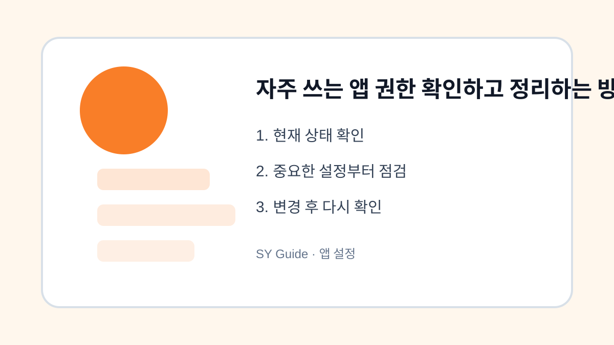

자주 쓰는 앱 권한 확인하고 정리하는 방법
카메라, 마이크, 위치, 사진 권한을 앱별로 확인하고 필요한 범위만 허용합니다.

앱을 설치할 때 허용한 권한은 시간이 지나도 그대로 남아 있는 경우가 많습니다. 예전에는 필요했지만 지금은 쓰지 않는 위치, 카메라, 마이크 권한이 있을 수 있습니다. 권한 점검은 개인정보 보호와 배터리 관리에 모두 도움이 됩니다.
권한별로 보기
설정에서 개인정보 또는 권한 관리 메뉴를 열면 위치, 카메라, 마이크, 사진 접근 권한을 권한별로 볼 수 있습니다. 어떤 앱이 어떤 권한을 쓰는지 한눈에 확인한 뒤 필요 없는 항목을 줄입니다.
앱별로 보기
자주 쓰는 앱은 앱별 설정에서 권한을 확인합니다. 지도 앱은 위치가 필요하지만 사진 편집 앱이 항상 위치를 쓸 필요는 적습니다. 사진 권한도 전체 사진이 아니라 선택한 사진만 허용할 수 있는 경우가 있습니다.
| 권한 | 필요한 앱 예시 | 점검 기준 |
|---|---|---|
| 위치 | 지도, 날씨 | 항상 허용 최소화 |
| 카메라 | 카메라, 메신저 | 사용 앱만 |
| 마이크 | 통화, 녹음 | 불필요 앱 차단 |
| 사진 | 편집, 메신저 | 선택 접근 검토 |
앱 설정을 바꾸기 전 마지막 점검
- 권한 관리 메뉴에서 전체 목록 확인하기
- 항상 위치 허용 앱 줄이기
- 카메라와 마이크 권한을 필요한 앱만 남기기
- 사진 접근 범위를 확인하기
- 앱 업데이트 후 권한이 바뀌었는지 점검하기
권한은 앱을 편하게 쓰기 위한 도구지만 필요 이상으로 넓게 열어둘 이유는 없습니다. 한 달에 한 번만 확인해도 불필요한 접근을 많이 줄일 수 있습니다.
앱 권한을 다시 봐야 하는 상황
오래전에 설치한 앱은 카메라, 마이크, 연락처 권한을 왜 받았는지 기억하기 어렵습니다. 사용하지 않는 앱이나 한 번만 쓴 앱부터 권한을 확인하면 개인정보 노출 가능성을 줄일 수 있습니다.
앱 권한을 줄일 때 확인할 부분
권한을 전부 꺼버리면 인증, 사진 첨부, 위치 기반 기능이 갑자기 작동하지 않을 수 있습니다. 앱을 실제로 쓰는 상황을 떠올리며 필요한 권한만 남기는 방식이 가장 현실적입니다.
앱 권한 정리 관련 설정을 먼저 확인해야 하는 이유
앱 권한 정리 관련 설정은 단순히 메뉴 하나를 켜고 끄는 문제가 아니라, 실제 사용 흐름에서 어떤 불편을 줄이려는지 먼저 정해야 합니다. 같은 메뉴라도 기기 제조사, 운영체제 버전, 앱 업데이트 상태에 따라 이름이 달라질 수 있으므로 현재 화면을 기준으로 차근차근 확인하는 것이 좋습니다.
앱 권한 정리에서 자주 생기는 실수
앱 권한을 다시 봐야 하는 상황을 정리할 때는 되돌리기 어려운 삭제나 계정 변경을 마지막 단계로 미루는 것이 좋습니다. 먼저 표시, 알림, 권한처럼 쉽게 복구할 수 있는 항목부터 확인하면 실수 부담을 줄일 수 있습니다.
앱 권한 정리 점검 후 다시 볼 부분
앱 권한을 다시 봐야 하는 상황은 사용자마다 필요한 범위가 다르기 때문에, 자주 쓰는 앱과 계정부터 적용하는 편이 좋습니다. 바꾸기 전 화면과 바꾼 뒤 결과를 비교하면 어떤 설정이 실제로 도움이 됐는지 판단하기 쉽습니다.